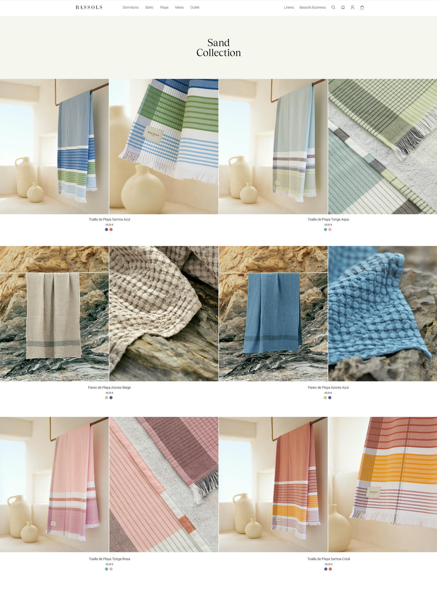
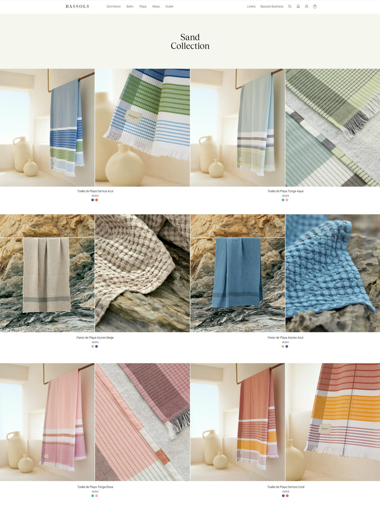

Bassols Sand Collection
2022 · Barcelona, Spain
Art Direction · Studio Photography · Retouching
Danae Fischer is a creative director based in Ibiza and Barcelona. This project was comissioned as a way to consolidate her business by provinding a fresh new visual identity, along with a website showcasing the provided services of the newly launched Danae Fischer Creative Studio.
Danae Fischer is a creative director based in Ibiza and Barcelona. This project was comissioned as a way to consolidate her business by provinding a fresh new visual identity, along with a website showcasing the provided services of the newly launched Danae Fischer Creative Studio.

Web design also came into play as the second part of the project involved the creation of a portfolio-type web page for the client's studio. The web is responsive and has different pages for each subject, which include a home, blog, projects and about page.


Danae Fischer is a creative director based in Ibiza and Barcelona. This project was comissioned as a way to consolidate her business by provinding a fresh new visual identity, along with a website showcasing the provided services of the newly launched Danae Fischer.
 

Danae Fischer is a creative director based in Ibiza and Barcelona. This project was comissioned as a way to consolidate her business by provinding a fresh new visual identity, along with a website showcasing the provided services of the newly launched Danae Fischer.